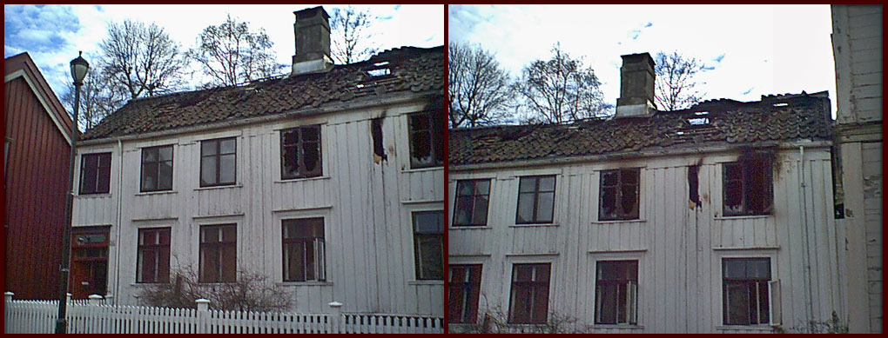
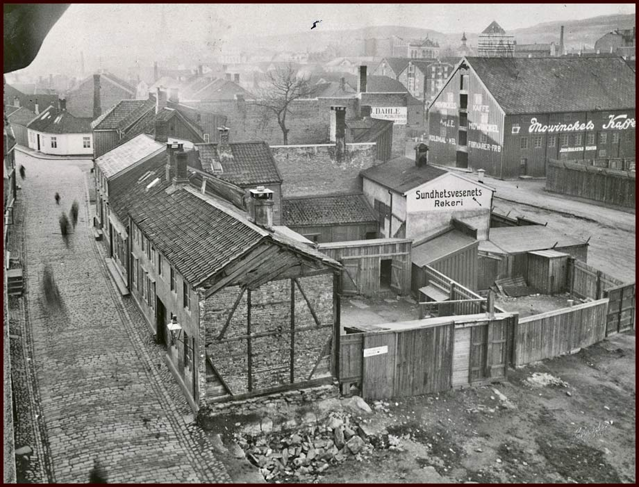

Nedre Bakklandet 26-50
Nedre Bakklandet strekker seg fra Bakke Bru "til Den Gamle Bybro". Eller aller helst er det vel motsatt. På denne siden finner du nummer 26-50. Over finner du en meny med husnummer, som skal guide deg til riktig hus. Du kan selvfølgelig også bare rulle nedover siden.
Nedre Bakklandet mørk og fuktig kveld (Foto: EspeN-ikon ®)
Nedre Bakklandet på 1920-tallet? (Foto: Ukjent) Kilde: Kurt Sandaunet - privat samling
Bildet er høyst sannsynlig tatt en gang på 1920-tallet. I nummer 29, kan skiltet såvidt tydes til at S. Nebelung Rørleggerforretning hadde tilhold. (S.Nebelung har adresse Nedre Bakklandet 29, i adressbok for Trondhjem 1925). På andre siden av gaten, i 24b er det A. Sjeldam Sadelmaker og Tapetserer som holder til. Hva slags forretning som holder til i nummer 27, er vi usikker på, og er på jakt etter opplysninger. Tips ønskes! (Lenke til E-post her -> E-post )
↑ Til toppenNedre Bakklandet 26
Nedre Bakklandet 26a til venstre, 26b og c til høyre. (Foto: EspeN-ikon ® )
Nedre Bakklandet 26, var byens første sjøsprøytehus. Bildet er tatt i Mars 1964 (Foto: Ukjent ) Kilde: Trondheim Byarkiv
Sjøsprøytehuset ble oppført på 1800-tallet, revet i 1974. Tidligere oppbevaringssted for brannsprøyter. Kilde: Trondheim Byarkiv
Eiendommen Nedre Bakklandet 26 b og c, var fra gammelt av en del av Nygata 3. I 1964 var det fremdeles sånn, og endringen kom ikke før det ble revet og satt opp nye bygg.
↑ Til toppenNedre Bakklandet 27
Nedre Bakklandet 27. (Foto: EspeN-ikon ® )
I dette bygget ble det drevet kolonialhandel fra etter krigen og frem til ca. 1963/64. Butikken het Langø Kolonial, og flyttet til Kirkegata ca. 1963-1964. Forretningen ble drevet av Wilhelm Pettersen Langø f. 27.04.1911. Han kom fra Langøya i Frøya kommune, og han var gift med Hilda Langø f. 1908 (pikenavn Hybertsen). De bodde i Nygata 3.
Wilhelm var bror til vår bestefar. Vår mor, Anne Mari Holm jobbet i butikken i 1961/62
Kilde: Ann Helen Holm og Marita Holm Eltvik.
Dotømming på Nedre Bakklandet, i 1961. Personen på bildet er renholdsverkets Georg Sivertsen (Foto: Ukjent ) Kilde: Trondheim Byarkiv
Nedre Bakklandet 28
Nedre Bakklandet 28 - Januar 2012 (Foto: EspeN-ikon ® )
Absolutt et av de mest sjarmerende husene på Bakklandet. Cruise-turistene elsker det, og det fotograferes flittig.
↑ Til toppenNedre Bakklandet 29
Nedre Bakklandet 29 - Januar 2012 (Foto: EspeN-ikon ® )
Nedre Bakklandet 29 er en eiendom, men fremstår mot gata som to hus.
Familien Jensen som bodde i Nedre Bakklandet nr. 29 på 2 små rom og kjøkken i 1.et med 2 store vinduer helt til høyre for porten, mot gaten. Her bodde vi fra 1936, da storesøster Greta ble født. Tore, født i 1940 var en livlig krabat som det kunne være vanskelig å holde styr på. Lillesøster Elin ble født i 1941. Senere kom 2 gutter til: Roald i 1944 og Aage i 1947. Familien flyttet i 1961. Senere ble hele den spennende bakgården revet og ny boligdel ble satt opp til venstre for porten. I denne gården hadde vi mye moro. Skrevet av Greta Kielland 6/12 - 2001 på Henning Meyers Nettside.
Dotømming på Nedre Bakklandet, i 1961. Personene på bildet er renholdsverkets Henrik Gimseng og Georg Sivertsen til høyre. (Foto: Ukjent ) Kilde: Trondheim Byarkiv
Nedre Bakklandet 30
Nedre Bakklandet 30 - Januar 2012 (Foto: EspeN-ikon ® )
Nedre Bakklandet 30, på hjørnet av Nedre Baklandet og "Sandaunets Plass". Brannherjet i 1982, og fremstår i dag noe annerledes enn opprinnelig. Mye av det opprinnelige ble allikevel berget og brukt på nytt ved restaureringen.
Innsendt av Jostein Myklebust (uten ansvar for mulige feil) :
Det er her mannen som har gitt navn til Sandaunets plass har tilhold. Man kan vel se en ganske så tro kopi av tidligere lysstolper ved endeveggen. Hvis jeg ikke helt har misforstått, er denne lysstolpen en støpning han har fått utført ut fra gamle bilder. Han jobbet en stund med å få alle lysstolpene på Bakklandet tilbakeført til denne typen, men det kan han kanskje si noe om selv.
Imidlertid, når det gjelder eiendommen: Før brannen i 1982, var det en annen ulykke som rammet denne eiendommen. Jeg mener å huske at en traktor braste inn i hjørnet (bak benken) og smadret hushjørnet. Dette ble reparert, og ikke så lenge etter var det en eldre mann som skulle fyre opp i oven, en kald vintermorgen. Det ville ikke bli skikkelig fyr i ovnen, så han helte like gjerne innpå en flaske rødsprit, og fikk det hele i gang med fynd & klem, med påfølgende grimt resultat.
Brann i Nedre Bakklandet 30, den 4. januar 1982. Fra Trondheim Brannvesens arkiv (Foto: Ukjent ) Kilde: Trondheim Byarkiv
Nedre Bakklandet 31
Nedre Bakklandet 31 - Januar 2012 (Foto: EspeN-ikon ® )
Nedre Bakklandet 31-33 september 1967 (Foto: Ukjent) Kilde: Trondheim Byarkiv
Nedre Bakklandet 32
Nedre Bakklandet 31 - Januar 2012 (Foto: EspeN-ikon ® )
↑ Til toppen
Nedre Bakklandet 33
Nedre Bakklandet 33 - Januar 2012 (Foto: EspeN-ikon ® )
Oversiktsbilde fra Nedre Bakklandet og Nygata. (Foto: Hilfing-Rasmussen, Trondheim) Ukjent årstall. Kilde: DKNVSB, Trondheim nr. IV ukjt. 1379
Mye har endret seg siden dette bildet ble tatt. Huset i forgrunnen, som lå i bakgården til nr. 31/33, eksisterer ikke lenger.
Nedre Bakklandet en sommerdag i 1921 (Foto: Hilfing Rasmussen) Kilde: DKNVSB Trondheim
Gatebilde fra Nedre Bakklandet i 1921. Til venstre ser vi porten og litt av bygningen i 26c, hele fasaden på nr. 28 og 30 (som her ser vesentlig lavere ut, enn i dag), og nr. 32 lengst vekk. Til høyre ser vi nr. 33 med trappen og åpent vindu, en guttunge som står utenfor den tilbaketrukkede nummer 35, nummer 37 ved gatelykten, nummer 39 som i dag er kjent som "Bakklandets Allsidige Selskap". Nr. 41 ser ubebygd ut, og så skimter vi nummer 43 og 45 som i dag er borte, og erstattet med lekeplass. Ved den lille lastebilen har vi nummer 47a, hvor Bakklandet Barneasyl holdt til frem til 1889.
↑ Til toppenNedre Bakklandet 34
Nedre Bakklandet 34 finnes ikke lenger, men nå en del av "Indre kvartal" med adresse Nygat 11 - Bildet er tatt i januar 2012 (Foto: EspeN-ikon ® )
Verkstedets forrige indehaver U. Wisløff gik konkurs i aaret 1903. Umiddelbart
efter driftens indstilling startede 4 af Hr. Wisløffs funktionærer aktieselskab for at leie værkstdet og fortsætte med driften af samme. — Bogholder J. G Faanes, Snedkerformand H. O. Waade, Støberiformand J Nilsen, Former A. Nergaard. Man begyndte da med 13 Mand. Nedre Bakklandet 35 brant i april 2000. Nytt hus ble satt opp på samme sted, og tilnærmet lik fasade mot gata.
Bildet er hentet fra Henning Meyer's nettsted Trondheimstegningen. Trondheimstegningen.

På Bakklandet er det uvanlig med hage, siden tomtene som regel utnyttes fullt ut til bygninger. I Nedre Bakklandet 37 er det en vakker hage, som er opparbeidet over mange år. Både dagens eiere og forrige eier har lagt ned mye tid i hagearbeid, og skapt en oase på baksiden av huset. Huset er omfattende restaurert på 80-tallet, og har i dag en konstruksjon i tømmer.
Innsendt av Jostein Myklebust (uten ansvar for mulige feil) : Et velkjent hus på Nedre Bakklandet. "Bakklandets allsidige selskap"
-> Adresseavisen: Bakklandet vakre stue I 2003 skulle Nedre Bakklandet 39 restaureres, men arbeidet ble vesenlig forsinket på grunn av byggingen av garasjeanlegget i fjellet bak eiendommen. Her finner du en godt skrevet artikkel om livet med bygningsardeidere på trappa gjennom et helt år. -> Tunnelarbeider
Skole på Bakklandet var et faktum en menneskealder før 1800. I 1847 brant gamle Bakklandet folkeskole ned. I 1850 ble Nye Bakklandet skole bygget i stein, lokalisert mellom Nygata og Nedre Bakklandet. Skolen ble delt, Bakklandet pikeskole og Graamølna skole for gutter, lokalisert ved Bakke bro. En kan finne spor etter hjelpeopplæring tilbake til 1850-tallet. Først i 1880 fikk Trondheim en såkalt hjelpeskole, med en klasse og 10 elever. Hjelpeskolen fikk lokaler i gamle Bakklandet pikeskole. Hjelpeskolen gikk også under navnet særskolen. De fleste elevene ved Bakklandet skole var hjemmehørende i Trondheim. Elever som måtte bo utenfor byen ble hver dag hentet og kjørt hjem av skolens vaktmester.
Bakklandet spesialskole var lokalisert mellom to enveiskjørte gater. Nedre Bakklandet og Nygata. Trafikkproblemet ble etter hvert betydelig. En del av skolen var bestyrerbolig. Bestyreren hadde kombinert kontor og spisestue. Et knøttlite lærerrom fantes i vaktmesterboligen ved siden av. Bygningene gjennomgikk store forandringer i denne perioden. Lokalene var imidlertid stadig meget enkle og trange, og behovet for mer plass ble etter hvert påtrengende.
Skolen endret navn til Trondheim kommunale spesialskole i 1965 og ble lagt ned i 1978.
Arvtaker er Dalgård skole, opprinnelig en spesialskole da den åpnet i 1978, som arvtaker til Bakklandet spesialskole for evneveike. Den fungerer nå som en vanlig barneskole, men med tilrettelagt undervisning for funksjonshemmede.
Kilde: Hjemmesiden til Trondheim kommune og Trondheims skoleanlegg, rapport fra Byantikvaren, september 2003
På adressen Nedre Bakklandet 41 finner vi utkjøringen fra Bakklandet garasjeanlegg (Trondheim Kommune), og en dekorert trafokisosk...
Fra Folketellingen i 1910 kan vi lese at Anna Magrethe Olsen (04.10.1839) bodde her og hennes yrke var "husgjerning". Hun bodde her sammmen med sin forsørger og ugifte datter, Hilda Lovise Olsen (26.03.1869), som var Betsyrerinde ved Kaffebrænderifabrik. Hilda Lovise var selv eier av huset, og drev kaffebrenneriet på samme adresse.
Nedre Bakklandet 43 og 45 er revet. Et bilde tatt av Klaus Forbregd i 1960, viser begge husene. Bildet eies av NTNU Universitetsbiblioteket, og kan ikke fritt gjengis. Du kan se bildet ved å klikke på denne lenken: Både nr. 43 og 45 er i dag del av et friområde. 41b inngår også i dette.
Du kan også se husene 43 og 45, under et gatebildet fra 1921 som ligger under Nedre Bakklandet 33. ↑ Til gatebilde 1921

Bakklandet Børneasyl flyttet i 1842 inn i nyoppført bygg i Nedre Bakklandet 47a, ved foten av Asylbakken. Etter nesten tre års virksomhet i midlertidige lokaler satte asylselkapet opp en byggning på denne tomten som var eid av kjøpmann Ole Moe. Ole Moe satt i asylselkapets styre. Barneasylet ble her til 1889, og flyttet til Øvre Bakklandet til større lokaler. Etter at barneasylet flyttet ut ble gården solgt til urmaker Vognild, og bygd om til leiegård. I 1902 ble gården solgt til klokker Ole Klykken, som i 1916 installerte elektrisk lys. I 1932 fikk Karen Sofie Grong gården i dåpsgave. Hun var eier til 1960, da den ble solgt til Lorentzen Eiendom. Trondheim kommune overtok gården i 1966, i forbindelse med planer om sanering av Bakklandet. Kommunens eiendomsavdeling arbeidet fra 1989 for å rive bygningen. Byantikvaren gikk i mot dette, med begrunnelse i at hjørnet hvor gården ligger er et særlig verneverdig trekk ved Bakklandet. Huset ble så stående tomt og forfalte til 1992, da den ble kjøpt av Arkitekt Trond Eide. Eide satte i stand gården etter antikvariske og økologiske prinsipper. NRK fulgte prosjektet og laget programmet "Riv sjiten". (Kilde: Trondheim Byleksikon)
→Byavisa - "Riv sjiten" av Sverre Lilleng
Kilde: Jonas Chr. Richter. "Det gamle og det nye Trondhjem"
De fire "aktionærer" som startede Bakklandet Støberi & Mek Verksted. med kireklokker støpt for Lademoen Kirke. Ca. 1905 (Foto: Erik Olsen) Kilde: Jonas Chr. Richter. "Det gamle og det nye Trondhjem"
Arbeidsstokken ved Baklandets Støberi og Mekaniske Værksted. Bildet er tatt på begynnelsen av 1900-tallet, før 1916. (Foto: Erik Olsen) Kilde: Kildenet.no
Bildet er tatt fra nord mot sør. Skimter så vidt Nygata 7 i bakgrunnen.
Frå Iste November samme Aar overtoges
Værkstedet med Maskiner, Modelsamling, Tegninger samt Inventarium forøvrigt.
DRIFTEN I TIDSRUMMET 1903—1905.
Driften har i disse 2 Aar gaat
stadig fremover, i værkstedet er saaledes indlagt elektrisk lys og kraft — og
værkstedet har undergaaet forøvrigt store forbedringer. For tiden beskjæftiger
værkstedet paa Baklandet ca. 50 mand, som fordeles paa følgende afdelinger:
Støberi, Modelværksted, Smedje samt kombineret Maskin- og Dreierværksted.
Skibsværftet i Ilen, som iigeledes er forsynet med elektrisk kraft
for maskiner og ophaling af fartøier, beskjæftiger for tiden ogsaa 50 Mand.
Skibsværftet har ophalingsbeddinger for skibe indtil 150 Tons. Der ude udføres
fortiden 2 store dampskibsreparationer.
Firmaet er meget bekjendt for
sine kirkeklokker, som er en specialitet. Saaledes er i den sidste tid leveret 2
store kirkeklokker til Lademoens Kirke, vægtig ca 1200 kgr. tilsammen, og er nu
tillige overdraget leverancen af lignende klokker til Aalesunds nye Kirke. Forøvrigt
leveres alslags støbegods for fabrikker, skibe og bygninger, udfører almmdeligt
jern- og metalarbeide, reparation af damp- og seilskibe, bygning af prammer etc.
Selskabets Aktiekapital er nu 6000 Kroner, fuldt indbetalt Bestyrelsen bestaar af
D'Herrer J. G. Faanes og H. O. Waade; den førstnævnte indehar Selskabets Prokura.
Kilde: Jonas Chr. Richter. "Det gamle og det nye Trondhjem"
Bakklandet Støberi og Mek Verksted hadde lokaler i Nedre Bakklandet 34 a og Bakklandets Nygate 11-15. Bedriften ble nedlagt i 1926, Kortman overtok lokalene.
Kilde: NTNU Ubit
Nedre Bakklandet 34b, 9.februar 1989 (Foto: Ukjent) Kilde: Trondheim Byarkiv
Nedre Bakklandet 35
Nedre Bakklandet 35 - Januar 2012 (Foto: EspeN-ikon ® )

Nedre Bakklandet 35 - 25.juli 1998 (Foto: Kenneth Brodal )
Nedre Bakklandet 35 - Etter brannen i 2000. (Foto: Jostein Myklebust)
Nedre Bakklandet etter en regnskur. 11.august 2009 (Foto: Tor Magne Benjaminsen ® )
Nedre Bakklandet 36
Nedre Bakklandet 36 er ikke lenger en eksisterende adresse. Nr. 34 og 36a og b lå der disse bygningene er oppført. De har i dag adresse Nygata 11, og er en del av det som omtales som "Indre kvartal". Den blå murgården på høyre side er bevart, og tilsvarer den gule bygningen på bildet under. Januar 2012 (Foto: EspeN-ikon ® )
Nedre Bakklandet 36, 9.februar 1989 (Foto: Ukjent) Kilde: Trondheim Byarkiv
Nedre Bakklandet 36 er ikke lenger en eksisterende adresse. Denne murgården er bevart, og tilsvarer den gule bygningen på bildet over. Dagens adresse er Nygata 11. Januar 2012 (Foto: EspeN-ikon ® )
Nedre Bakklandet 37
Nedre Bakklandet 37 - Januar 2012 (Foto: EspeN-ikon ® )
Jeg må innrømme min usikkerhet på om det er 35 eller 37 som jeg kalte ”Simonsengården”. Men når det gjelder nyoppreising i tømmer, er jeg sikker på at det gjelder nr. 37.
Her bodde det ei dame med navnet Simonsen. Derav navnet ”Simonsengården”, som er det navnet jeg kjenner. Hun flyttet dit, visstnok på sommeren 1959, etter å ha bodd i Brubakken 2b, der jeg og mine foreldre flyttet inn etter henne. Dette huset er av ganske ny dato, da det gamle ble revet helt og bygget opp igjen i heltømmer i 80-tallet. Det fikk stå i flere år uten ytre panelbekledning, men eierne måtte tilslutt godta kommunens pålegg om å tildekke tømmerkassen med panel.
Nedre Bakklandet 37 - 1.mars 1974. I 1974 var gården eid av Trondheim Kommune, og takstert 1il Kr. 15000.-. Taket ble karaktrisert som dårlig, og eiendommen hadde en lav prioritet for bevaring. Kilde: Trondheim Byantikvar, Antikvarisk register 1976 (Foto: Trondheim Byantikvar)
Nedre Bakklandet 38
Nedre Bakklandet 38 - Januar 2012 (Foto: EspeN-ikon ® )
Nedre Bakklandet 39
Nedre Bakklandet 39 - Januar 2012 (Foto: EspeN-ikon ® )
Nedre Bakklandet 39 - Sommerfasade 2011 (Foto: Solvor Leistad )
-> Adresseavisen: Bakklandet vakre hage
-> Bakklandets Allsidige Selskap
Konsert i Bakklandets Allsidige Selskap - Bakklandsdagene 2011 (Foto: Ukjent)

Anleggsperiode i 2003 ved Nedre Bakklandet 39 - Nytt garasjeanlegg i fjellet bygges. (Foto: Beboere i NB39 )
Nedre Bakklandet 40
Nedre Bakklandet 40 - Januar 2012 (Foto: EspeN-ikon ® )
Nedre Bakklandet 41
Nedre Bakklandet 41 - Januar 2012 (Foto: EspeN-ikon ® )
Nedre Bakklandet 42
Nedre Bakklandet 42 er i dag en ubebygd tomt, på enden av kvartalet som ligger mellom Nedre Bakklandet og Nygata (Kart: Trondheim Kommunes interaktivt kart)
Nedre Bakklandet 43
→ Biblitokfoto: Nedre bakklandet 43 og 45
Nedre Bakklandet 43 og 45 er i dag ubebygd. (Kart: Trondheim Kommunes interaktivt kart)
Nedre Bakklandet 44, 46, 48, 50 og 52
Nedre Bakklandet høsten 1916 (Foto: Marie Jespersen,gift Øhgaard) Kilde: Trondheim Byarkiv
Nedre Bakklandet 44 - 54 og Nygata 32. Revet vinteren 1935-36. Nummer 50 - 54 ble revet sommeren 1935. (Foto: Schrøder) Kilde: Trondheim Byarkiv
Nedre Bakklandet 54 - 44 og Nygata 32. Revet vinteren 1935-36. Nummer 50 - 54 ble revet sommeren 1935. (Foto: Schrøder) Kilde: Trondheim Byarkiv
Nedre Bakklandet 45
Nedre Bakklandet 47a
Nedre Bakklandet 47a har høyeste verneklasse og er stor historisk verdi. (Foto: EspeN-ikon ® )
Nedre Bakklandet 47b. (Foto: EspeN-ikon ® )
Nedre Bakklandet 49